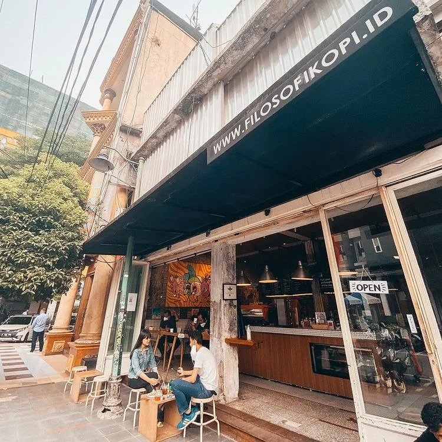

3. Kedai Filosofi Kopi

Tempat ngopi di Jakarta peninggalan
film Filosofi Kopi ini nggak pernah sepi. Saking populernya, mereka juga udah membuka outlet di berbagai
kota di Indonesia.
ilihan kopi yang cukup beragam, mulai dari cappuccino, caffe latte, mochaccino,
Javanesia caramel, hingga non-based drink seperti greentea latte, mampu menghipnotis dan nendang di
lidah.
Sambil ngopi, kamu bisa pesan camilan untuk mengisi perut. Mereka punya snack enak seperti french fries,
churros,
sampai lumpia. Tempatnya juga asyik banget buat nongkrong sehingga kamu nggak bakal bosen berlama-lama di
sini.
Photo source: @filosofikopi
Lokasi: Kawasan Terpadu Blok M Square, Jl. Melawai 6 No.1, Jakarta